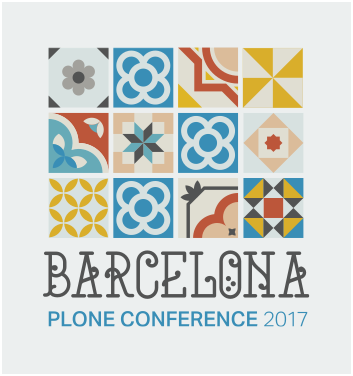
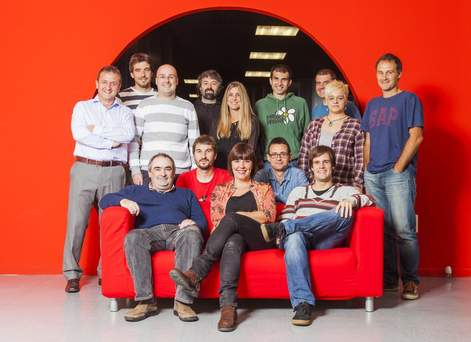
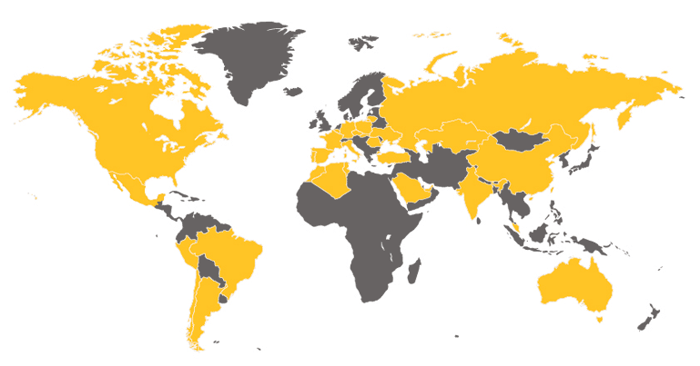
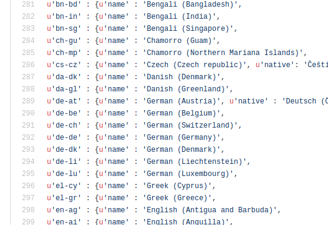
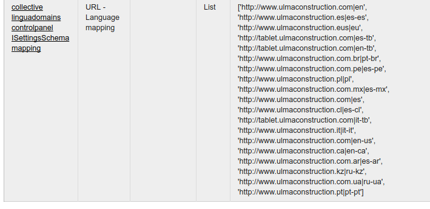
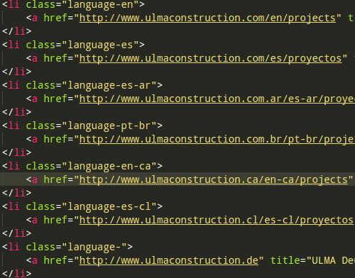
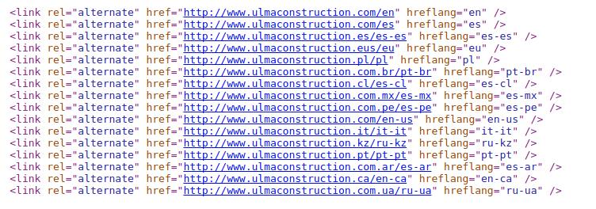
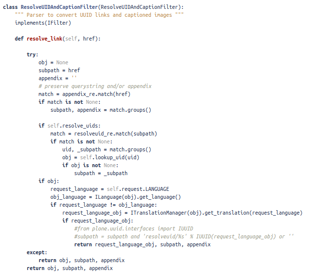

Use case: Plone in multi-{country, language, domain} applications

by Mikel Larreategi

I am Mikel Larreategi and work for CodeSyntax, an internet
company from Eibar in the Basque Country in norther Spain.
We are a group of 16 people working on the internet since 2001
and since the beginning we work with Python.
We started with plain Zope and back in 2005 started with Plone 2.1.
Then we have developed sites with all other Plone versions.
Our developers team is more or less 50%-50% of Django and Plone developers
although we do some other things too (mobile developments with angular
and ionic, some wordpress...)

Some years ago a company came to us to ask a web platform. They wanted to get rid
of their manual website and start managing all the content using a CMS.
From the beginning they said that they wanted a multilingual solution because they
are a heavily internationalized company with a lot delegations and subsidiary branches
all over the world.
Their needs
Multilingual: mysite.com/en, mysite.com/es, ...
Multi-domain: mysite.de, mysite.es, mysite.com, ...
Multi-everything: mysite.com/en, mysite.com/es, mysite.es/es, mysite.es/eu
Centralized content-management: edit.mysite.com/en, edit.mysite.com/es, edit.mysite.com/es-es, ...
They wanted this platform to be unique and centralized because they wanted to have
some central-control of the contents and permissions available to content-editors
on their subsidiaries.
They also wanted to be a multi-country and multi-domain solution. They wanted to create
as many sites as subsidiaries they have, and some of them to be multilingual.
They needed a multi-everything solution.
We decided to build a platform using Plone 4 and dexterity content-types.
For the multilingual solution we used plone.app.multilingual, which is the
default way to create multilingual sites these days.
To provide the additional multi-everything solutions we used some add-ons and hacks
because we faced some problems or limitations on Plone.
Question:
The first question arose early on the development: we needed to have 2 spanish versions of the site
because the contents were not the same for the international site spanish version and the Spain site spanish version.
Answer:

Well, this one was easy. Plone already supports language variants. It provides a language variant vocabulary
in plone.i18n.
There we can see the different language-variants, from arabic, to german, english, spanish or french to name a few.
So this way plone shows the Available Languages list with the full list of languages plus the language variants.
So we can choose to have a site in "Spanish" and in "Spanish-Spain" and "Spanish-Mexico"
Question:
So far so good. But what to do with inexistent language-variants? For instance our client wanted
to create an english site for Mexico, different from the International English, US English and UK English.
But there is no such language variant like "English (Mexico)"
Answer:
But we can create a language for you
Patch plone.i18n to extend the language variant vocabulary.
We created: en-mx, en-fr, ru-kz
So we created English (Mexico), English (France), Russian (Kazakhstan), ...
and opened the door to create additional languages for anything.
While you keep the first part of the language-variant code OK, Plone's language
negotiation works, so you don't have to worry about strange configurations.
Question:

collective.linguadomains provides a way to configure which languages of your site should be
served from which domain.
To achieve that it provides a control-panel configuration form and a viewlet that does
the checks and redirects accordingly
collective.linguadomains is great!
It creates redirects for incorrect site-language combinations: mysite.fr/es -> mysite.com/es
You need to manualy override the language-selector viewlet if you want to show links instead of redirects
The same for the language-alternate viewlet
collective.linguadomains controls if an end-user tries to show a language in an incorrect site.
For instance show Spanish (International) on France domain.
Our SEO-man wanted to change Plone's language change viewlet because currently it shows links to
a redirect view, and wanted to show directly the links to the correct sites, so we needed to override
it and call collective.linguadomains' utils to achieve that.


guidelines by Google
language alternate links are a way to signal Google and other search engines
that we have that content in another languages and sometimes targetting specific countries.
We don't know exactly how Google behaves regarding unexisting language-combination pairs,
but for the momment we haven't had any message about the negative impact of it.
Question:
They wanted to create the basic structure of one language based on an
existing one. Without the need to create all contents manually
Answer:
language copier !
http://github.com/codesyntax/cs.linguacopier
So we prepared a language copier script, which takes a context object and translates it
to a selected new language with all its contents.
It works both for Dexterity and Archetypes. It's a simple but powerful tool
when you have a deep content tree to have a mirror in another language, and
start working on the copied content, because each countries always have differences.
We are working on polishing the script and I hope to be ready in a couple of weeks.
Some months ago there was a question in community.plone.org about this kind of feature
and I published it there, and now we are putting everything in an addon.
Question:
With all that, we built and published the site and some weeks later another client
came and asked for pretty much the same platform with a couple of additions:
the first one was: can you do content-management for us? We will provide the content
Answer:
XLIFF to handle the translations.
XLIFF is an XML based format to standarize the format of data during the localization process
of it.
Cannot find the file.
Fichier non trouvé.
It's basically an XML file, with a lot of 'trans-units' like this one
were the content goes.
You can have HTML included in it and the translation aid tool should escape
all that HTML to let the translator only with the real content (not to translate
the HTML tags)
slc.xliff
XLIFF integration for Plone
Both for importing and exporting
Both for Archetypes and Dexterity
One trans-unit per field
Using this is very easy to export the contents of a page in XLIFF format
feed the translation aid tool with that and using the translations and the
translation-memory provided by the client prepare the files to import them back
to Plone
Question:
sometimes the content (remember that this is HTML) has images or linked files (which will
be properly added in Plone), and XLIFF "hides" the HTML from the translator to avoid him
translating HTML tags, so what can we do with this type of content? It requires us to
check if all the images and links are valid and change with the proper ones.
Answer:
plone.outputfilters
As you may know, plone.outputfilters provides a way to hook filters to text when it is rendered.
The tipical examples are to resolve the UID links (and hide the resolveuid lilnks), and provide
captions to images inserted using the TinyMCE editor.

This way, when the resolveuid check is done, we check if the object is in the same language
of the context, and if not we link it to the proper object.
Of course, this requires to have all the items properly translated and file and image fields
marked as normal and not language-independent fields.
To sum up
Plone is perfect for multilingual content sites
It's easy to build powerful multi-site, multi-language sites
There are a lot of useful addons on the collective, just browse!
Pay attention to language-change URLs
Have Google in mind: redirects, proper language codes, alternate content links, ...